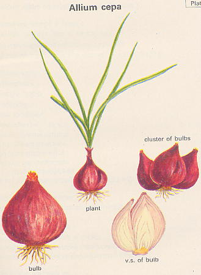
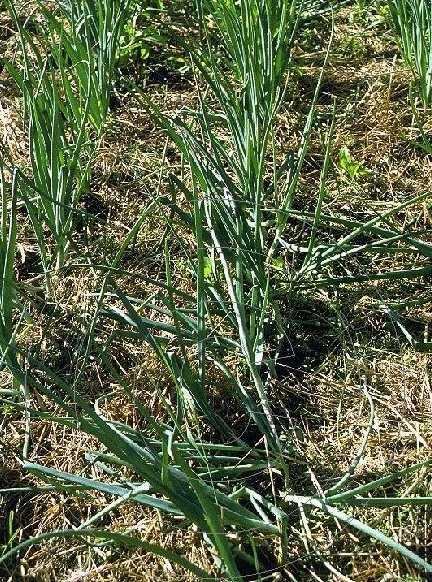
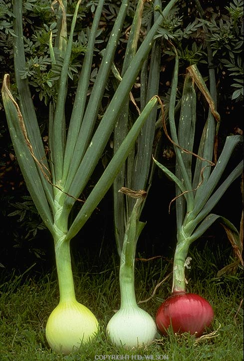

Alium cepa
L.
----- Taxonomic Details

----- Correct Name
----- Classification
----- Synonyms
----- Common Names
Other Biological Details
----- Habit and Habitat
----- Diagnostic Features
----- Reproductive Biology
---------- Breeding System
---------- Phenology
---------- Pollinators
----------
Seed Biology
--------- Seed Germination
------Cultivation
----- Major
Pests and Diseases
Economic Potential and Uses
----- Parts Used
----- Harvesting Practices
----- Produce and Products
----- Chemistry
----- Processing Techniques
----- Other uses
----- Economic Potential to the Country
----- Export Potential
Miscellaneous Information
Literature
Taxonomic Details
Correct Name :Allium
cepa L.

Family :Alliaceae
Synonyms : Allium sativum;
Common Names :
English: Onion,
Hindi: Piyaj
Tamil: Ira-vengayam, Irulli, Vella-Vengayam, Venkayam.
Telugu: Erragadda, Ulligadda, Ullipaya, Nirulli
Kannada: Eeruli, Nirulli
Sanskrit: Palandu
Malayalam: Ulli, Ceriya ulli, Cuvannulli, Bawang
Marathi: Kanda, Paiz
Bengal: Piyaj, Palandu
Gujarat: Dungari
Back to Top
Other Biological
Details
HABIT
& HABITAT

It is a cultivated crop species found in the
,Cultivated fields and Plains, Kitchen gardens. Onion is biennial, foetid,
scapigerous herb. Allium is distributed widely distributed through out the temperate
northern hemisphere of the globe. In the world, there are 80 species mostly
in western states, extending to Mexico and Guatemala. The old world species
are abundant in Europe, especially in U.S.S.R., North Africa and Asia. It is
assumed that India, Pakistan and Bangladesh, are the areas where it is most
likely that the onion started its tropical domesticated existence is the probable
route taken by onion to reach other parts of tropics. It
is one of the oldest vegetable universally popular and cultivated everywhere,
as it is evidenced in the inscriptions found on the pyramids of Eygpt and ancient
literature of India, Greece and Palestine.
BioticZone: Hindukush himalaya and Tropics.
Availability
:
Misc:
Gondal(Saurashtra),Mahaballeshwar,Saurashtra,Sindhudurg,Subtropical, Sub
- temperate, and temperate areas,
Country: India,
Zone: Central, North, South, West,
State: Goa Daman Diu, Gujarat, Himachal Pradesh, Karnataka, Maharashtra,
Rajasthan, Tamil Nadu, Uttar Pradesh,
District: Ahmadnagar, Allahabad, Belgaum, Buldana, Chamoli, Chandrapur, Goa,
Junagadh, Kangra, Madurai, Nagpur, Nasik, Nilgiri, Osmanabad, Palni hills, Pune, Rajkot, Salem, Satara, Thane and Tiruchi,
Status :
It
has been domesticated in several places. It occupies a large area in western
Asia extending perhaps from Palestine to India. It has been mentioned in charaka
- samhita a famous early medical treatise of India. The onion is grown World-wide.
Main production countries are China, India, USSR, USA, Turkey Eygpt, Netherlands,
Italy and Japan. Requires light and warmth, and rich, not too dry soil in the
neutral to alkaline range.
Back to Top
DIAGNOSTIC
FEATURES

Alliums are bulbous biennial or perennial herbs, which give off a distinctive
and pungent odour of onion or garlic when the tissues are crushed. The onion
smell and taste are important diagnostic features of the genus. Other characteristics
include the presence of bulbs formed by the attachment of swollen leaf bases
to the under ground part of the stem, inflorescence in the form of umbels with
numerous small flowers, a single spathe which splits into segments as the young
flowers emerge, and a superior ovary above the six stamens and the petal - like
perianth. Not all the species of the genus posses all these features, few lacking
in the volatile compounds that produce onion or garlic smell, some have very
long sheathing leaf bases and some have their storage organs in the form of
rhizomes or storage roots.
The inflorescence is capitulate with flowers which are peduncled to sessile,
axillary or forming lax racemes, simple, heterogamous having bisexual disc florets
in the centre and a few pistillate ray florets on the periphery. The outer florets
are glabrous except for a few cottony hairs,tubular, generally 3-lobed. The
stigma is generally 2-lobed and rarely3-lobed. The inner florets are glabrous
except for a few cottony hairs, tubular, 5-lobed and bisexual; the stamens are
5 in number with free, epipetalous filaments and a dithecous inflorescence;
it has syngenesious anthers which are connective, prolonged, tapering- style
and bifid.
Back to Top
REPRODUCTIVE
BIOLOGY
Breeding System :

Flower:
Trimerous, Bisexual, Actinomorphic, Hypogynous and Bracteate.
Perianth lobes are six, free, imbricate aestivation and are arranged in the
whorls as three inner perianth segments and three outer perianth segments.
Androecium:
Stamens are free, six arranged in two whorls as three inner stamens and three
outer stamens, hypogynous. Filaments exerted, the inner ones toothed at the
base. Another oblong, ditheceous.
Gynoecium:
Ovary superior, tricarpellary and syncarpous trigonous, three celled. Style
filiform, stigma minute, cells two ovuled, axile plancentation.
The flowers are protandrous immature and generally cross- pollinated chiefly
by honeybees, which visit the nectarous. Though cross-pollinated, selfing also
takes place as the insects visit many flowers in a single umbel and also umbels
of the same plant before leaving for other plant. In artificial pollination
for breeding purposes, selfing is accomplished by bagging all the umbels of
the same plant together and shaking or by introducing house flies.
Breeding
aims:
The breeding aims include high yield, uniform ripening, consistency of shape
and colour, stability, taste, disease resistance and suitability for certain
environmental conditions.
In common or Cepa onion, improvement can be effected in suitable commercial
cultivars either by selfing and massing or by hybrid seed production. The mass
selection method aims at eliminating the plants with undesirable attributes
such as off-types, bolters, splits and scallions This can be achieved by selecting
mother bulbs of a desired type from standard commercial cultivars, selfing them
to obtain uniform and true breeding lines, and then re-selecting the best combiners
and massing to restore vigour. This method of improvement will require at least
six seasons to achieve the best results.
The hybrid seed production involves the identification of male sterile lines
with sterile cytoplasm and recessive nuclear genes-S ms ms-and its counterpart
namely male fertile plants possessing normal cytoplasm N with any one of the
following genotypes-N Ms Ms, N Ms ms or N ms ms. The male fertile types should
be available from the inbred lines of the cultivar. After identification of
these types, hybrid onion seed production can be achieved by two methods.
In one method the male sterile character is introduced into the locally grown
commercial cultivar by repeated back-crossing with the male sterile line and
then crossing the male sterile plants with male fertile plants to produce the
hybrid seeds. In the second method the hybrid seed production involves the selection
of naturally occurring male sterile plants (S ms ms) in local commercial cultivars
and crossing with the male fertile plants in the same cultivars. This will produce
hybrids without any unwanted genes. In Aggregatum group which is clonally propagated,
improvement can be effected through clonal selections.
Phenology
:
In this crop the flowering occurs during Feb-May and also during January-
March. The
umbels are aggregates of cymes of 5-10 flowers open in definite sequence. The
flowers are white to bliush in colour. The perianth segments are 6 in 2 whorls,
anther bilocular; ovary superior, 3 locules with nectary at base. Each locule
has 2 ovules. the anther of inner whorl dehisce first and usually it occurs
between 9 a.m and 5 p.m. The style which is approximately 1 mm long when the
flower first opens is not receptive, until it elongates to a length of 5 mm.
This requires a day or two after anthers have all dehisced. An inflorescence
may continue opening for two weeks or more and a plant may be in bloom for more
than 30 days.
Pollinators:
Insects and Flies
It is a highly cross- pollinated crop, which
is facilitated by protandrous nature of flowers. Pollination
was observed to be effected by dammer bees (Melipona
iridipennis) and the house fly (Musca
domestica) which visited the flowers for the pollen and nectar secreted
at the base of the inner whorl of stamens.
Pollen viability:
Maximum on the day of anthesis(7:00 a.m to 1.00 p.m)
Stigma receptivity:
Maximum on the day of anthesis.
Emasculation and Pollination:
Select an umbel which has some opened flowers. Discard the
too young buds and opened flowers. Emasculate maximum number of buds (100-200)
in an umbel, bag it with the umbel of a male parent for pollination and
shake. Male umbel can be dusted on the emasculated buds for pollination.
Seed
Biology:
The fruit is a capsule, loculicidal. Seeds somewhat semi- circular or oval,
compressed, testa black. The greater portion of seed is endosperm, is made up
mostly of the cotyledon. The seeds are black, irregularly shaped and relatively
small. 1000 seed weight is 3.6 gm. Onion seeds are poor in keeping quality and
lose viability within a year. Therefore, it is essential to produce seeds freshly
and use the same for bulb production. It is a highly cross- pollinated crop,
which is facilitated by protandrous nature of flowers. Cross-pollination is
effected by honey-bees.
Seed
Germination :
Seed germination depends on the temperature, with 18-220C being optimum. In
India, seeds are sown during August- October in the nursery beds, and seedlings
are ready to plant when they attain a height of 15 cm. About 5-7 Kg of seeds
are sufficient to raise seedlings for planting one hectare of land. In north
india the crop is usually grown from seeds sown broadcast during August- November
in the plains, and Feb- Jun on the hills, on raised beds in shallow drills at
the rate of about 15 lb per acre. Transplanting gives better results. The seedlings
when 2-3" high, are transferred to irrigated beds. About 8- 10 lb. Of seeds
can raise sufficient seedlings for an acre.
Cultivation:
The onion is a long-cultivated plant of the Steppes of the west to mid Asiatic
area. The oldest report of the agricultural use of onions comes from Egypt.
Onions and leeks formed an important part of the nutrition of the pyramid workers
around 2800-2300 BC. The onion was spread through Europe with Roman culture.
Instructions on onion cultivation exist from 15th century Holland. Many varieties
have been bred which differ in shape, colour, size and taste. As flavoring,
light yellow and brownish-yellow, round varieties are preferred. Larger, mild-tasting
varieties are used as a vegetable. In cultivation a distinction is made between
the sowing of summer and winter onions and planting-out bulbs.
Back to Top
MAJOR
PESTS AND DISEASES
Pests: The
worst insects, on this are "Onion fly" or "Onion maggot"
(Hylemya antiqua).
Diseases: Onions are attacked by many diseases
and pests both during the growing period and post harvest marketing period.
The most destructive post harvests diseases are caused by Erwinia carotovora
(Bacterial soft rot) along with Pseudomonas spp., Botrytis cineria
(Grey mold rot),Fusarium cepae, and many other species (Fusarium
bulb rot), Aspergillus niger (Black mold rot), Pencillium spp.,
(Blue molds), Sclerotium cepivorum (White rot) and Colletotrichum
circinans (Smudge). Some of the fungal diseases few other bacterial and
of the onion and their causal agents.
Economic Potential and Uses
Parts used :
Bulbs, Leaves
Uses:
-
Onion is mainly used for foodstuff and flavouring.
There are 6 different kinds of onions grown in India for different purposes.
1.
green onions are used in salads.
2. mild onions are used for cooking or as salads.
3. pungent varieties are used as condiments for flavouring a number of foods.
4. Pearl onions or small onions are used in pickles, including vinegar pickles.
5. white and yellow onions for dehydration purpose and for manufacturing onion
powder.
6. red and yellow onions are general purpose crops for culinary use.
-
It is also considered a valuable winter food for cattle
and poultry.
-
Onion oil is obtained by the distillation of minced
onions.The oil is used for preparation of non-alcoholic breverages,confectionary
items,baked goods.
Produce
and Products
Bulbs, Onion paste, leafy vegetable, Dried onion pickling. Onion powder
Back to Top
Chemistry :
Composition
of Onion Bulb (Per 100g of edible portion)
| Contents |
Composition(gm) |
Moisture
Carbohydrates
Protien
Fibre
Minerals
Thiamine
Vitamin C
Calcium
Phosphorous
Iron
Nicotinic acid
Ribofalvin |
86.8
11.0
1.2
0.6
0.4
0.08
11 mg
180mg
50 mg
0.7 mg
0.4 mg
0.01 mg |
The
chemical composition of bulbs of onion cultivars is that the dry matter
varied from 10.66 to 14.80 per cent TSS 41.5 to 74.0 per cent and phenols 1.75
to 2.95 per cent on dry matter basis. Leaves contain Caffeic acid, ferulic acid
ester, spiraeoside. cell wall contais mannan, pectin, pectosane, fructosane,
myrosinane and pyroxidase. Most Allium species shows antioxidative activity
in a linoleic-acid model system. The volatile oil containing sulphur, albumen,
uncrystallizable sugar and mucilage, phosphoric acid, both combined with lime
and lignin. It is chiefly allyl-sulphide (C3 H5)2 S.
Pungency: The pungency in onion is due to a volatile oil as allyl-propyl
disulphide. Pungency varies with cultivar, growing conditions, stage of maturity
and storage conditions. It is maximum just before fall of top in the field.
The outer skin colour is due to the presence of quercetin.
Toxicity: onion (perhaps decayed)
is reported to cause fatal poisoning in cattle and horses.
Harvesting Practices :
Harvesting of onion bulbs at appropriate stage of maturity is
a very important factor in deciding storage life of onion as onion bulbs may
be stored for about six months. The onion bulbs reach maturity when the plants
cease to produce new leaves and roots. In onion, neck fall is the indication
of maturity.
Onions can safely be harvested one week after 50% crop
shows neck fall and 3 days field curing was desirable to improve the storage
life of onions. They further reported that windrow method of field curing and
cutting the bulbs leaving 2 cm neck which helped close neck, reduced losses
as much as 12 percent during5 month storage. The weather at the time of harvesting
should be warm and dry. The bulbs are harvested by hand pulling if soil is light.
Hand implements or modified potato digger also harvests these.
Yeild: In
rabi season the yield of onion bulbs
is around 25-30 tones per hectare, while in Kharif
season it is comparatively. Production
(1000t) Yield (dt/ha)
Back to Top
Processing Techniques
Curing:
Purpose of curing is the removal of excess moisture from the outer skin and
neck of onion, which helps in reducing the infection of diseases. This also
helps in minimizing shrinkage and development of skin color. Therefore onions should
be adequately cured. Onions are considered cured when neck is tight and
the outer scales are dried until they rustle. Onions are cured either in the
field or in open shades or by artificial means before or in storage.
Storage:
Onion is a delicate and perishable commodity difficult to
store for a long duration at room temperature, specially in tropical and subtropical
countries due to its high water content and many other factors associated with
it. In temperate countries, the climatological factors are more favorable for
the storage of onion bulbs, since these are harvested in autumn and stored during
low temperature period. In advanced countries, onions are also stored in cold
storage, specially for the purpose of seed production. But in tropical and subtropical
countries like India, the crop is harvested in summer and stored for 4-6 months
in ambient condition of high temperature and high humidity due to monsoon rains.
During this period, the bulbs sprout very easily besides rotting due to fungal
and bacterial diseases. In these countries, proper storage of bulbs is necessary
both for consumption and also for seed production.
Back to Top
Other
Uses
- The onion is popular as a vegetable and is also used for
flavoring and pickling.
- The onion is said to posses stimulant, diuretic and expectorant
properties, and is considered useful in flatulence and dysentery. Freshly expressed
onion juice has moderate bactericidal properties.
Back to Top
Economic Potential
To The Country
India exports a large quantity of onion, the principal exporting areas being
madras and Bombay. A considerable quantity goes to Japan, the Straits settlements
the federated Malay States, Burma, Ceylon, Hong kong, Portuguese East Africa
and Persia.
Export
Potential
Miscellaneous
Information
Back to Top
Literature
-
Allium
cepa- A Dictionary of the Economic products of India, 1889, George Watt,
Vol.I, pp.169171.
- Anonymous (1948).The Wealth of India: Raw Materials,
Vol:I. CSIR, New Delhi.P:56-58.
- James, A. D and Judith L.D. Handbook Of Alternative Cash
Crops. CRC Press, London Tokyo.
- Minor Spices And Condiments Crop Management And Post Harvest Technology,
Vol:XVIII (2001). ICAR, New Delhi. P:49-84.
-
Sasya
Sahyadri- A CD on Plants of Western Ghats, 2003, K.N. Ganeshaiah.
- Sharma, B.D. Karthikeyan S. & Singh N.P.Flora of Maharashtra
state(Monocotyledones)
- www.mpiz-keoln.mpg.de/pr/garten/schau/Allium
cepaL/AlliumcepaL
- www.mpiz-keoln.mpg.d
- www.hortibizindia.org.
Back to Top

.jpg){kind=link}